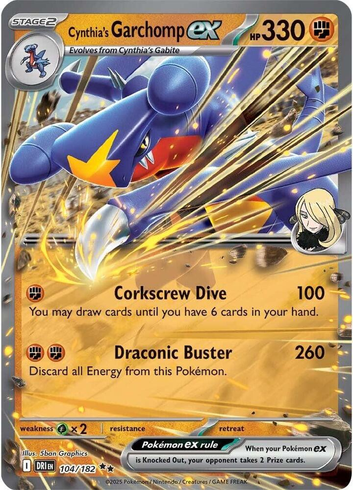
x3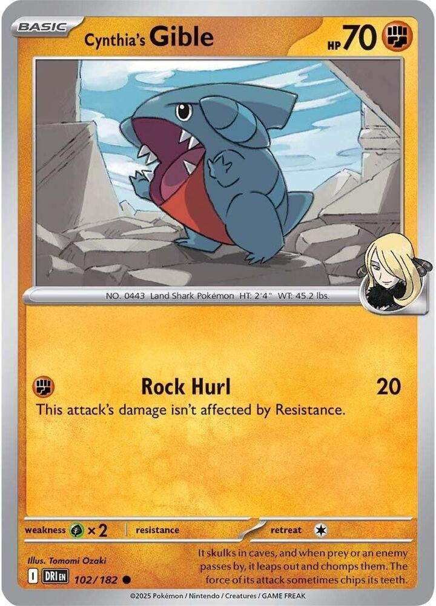
x4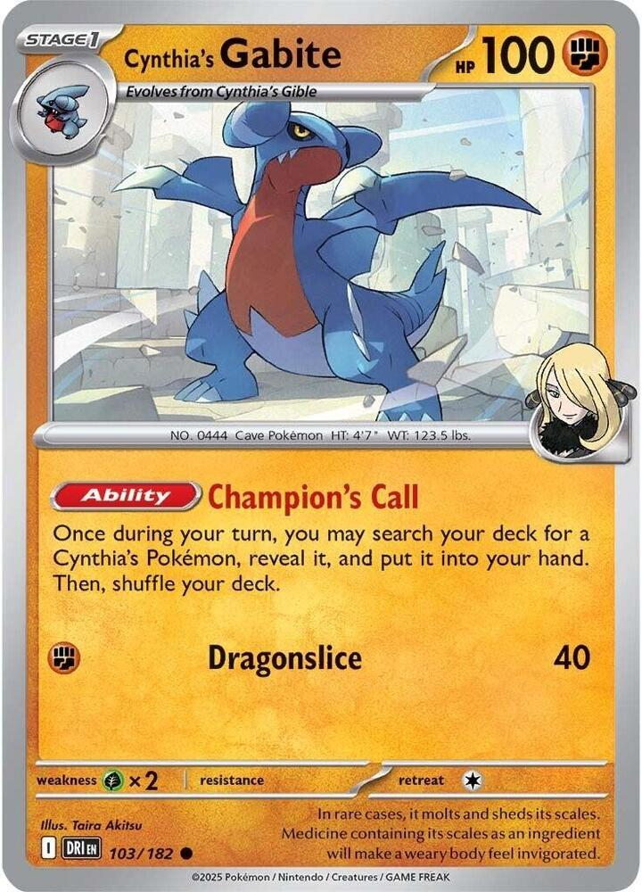
x4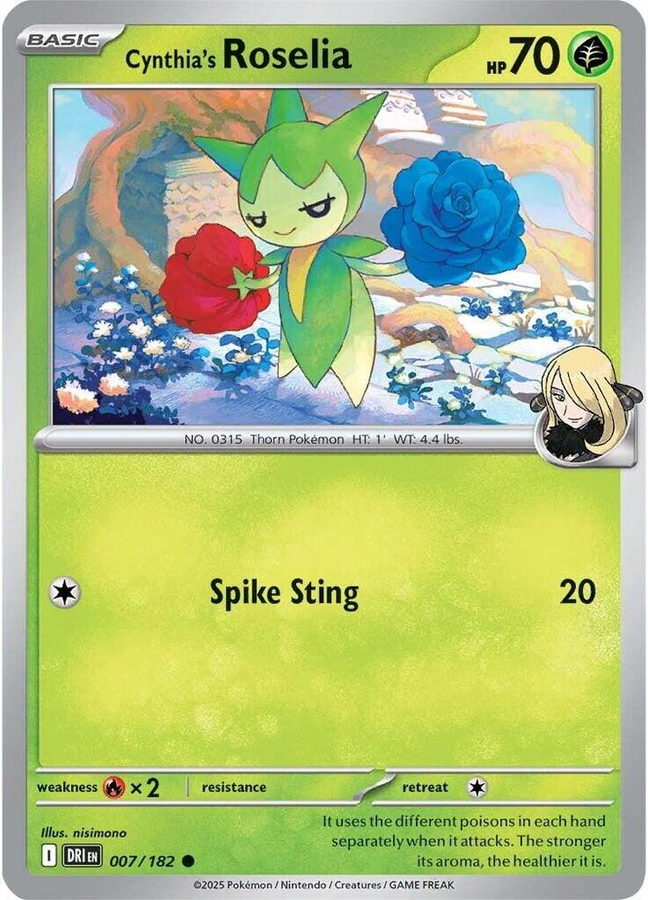
x4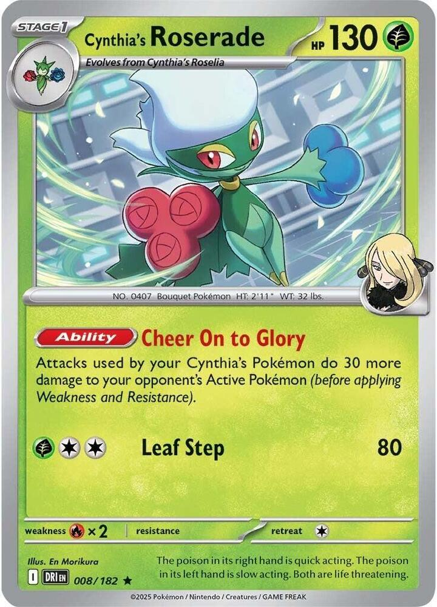
x3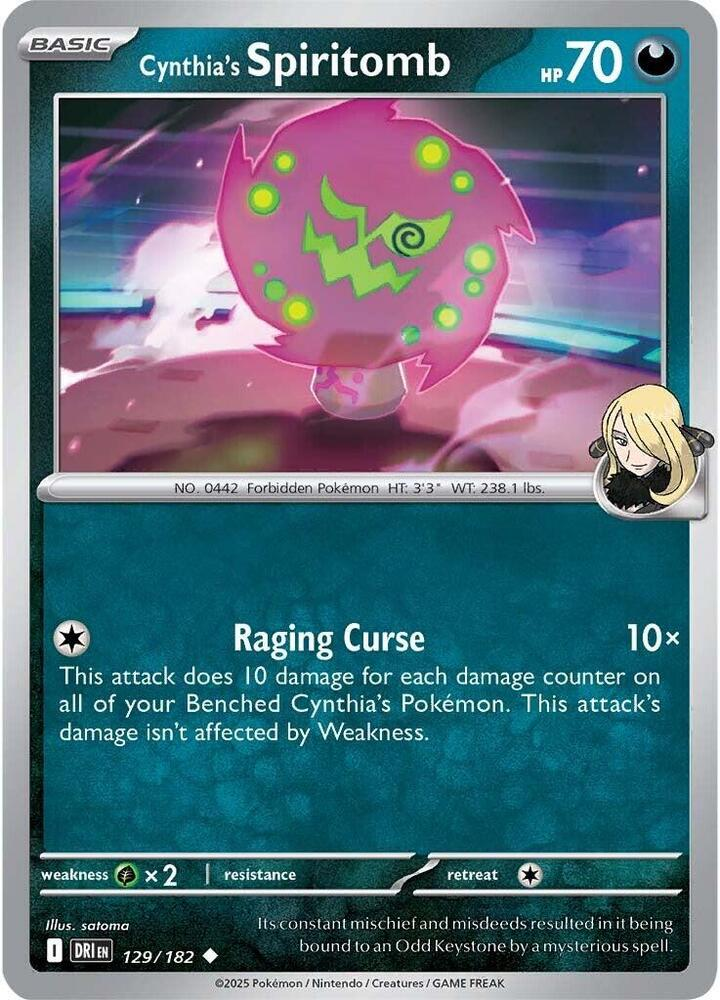
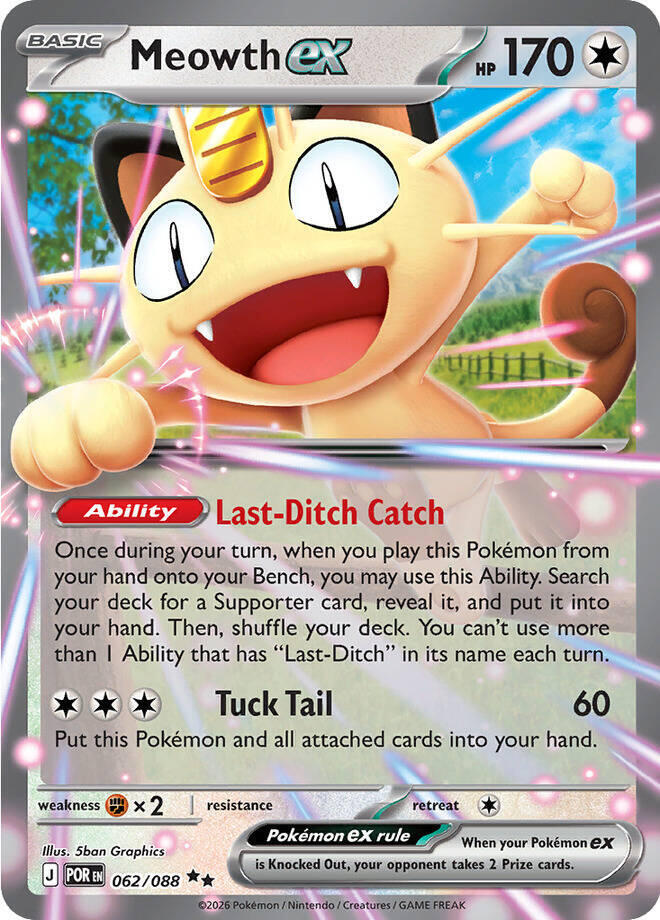
 x3
x3![Boss's Orders [Ghetsis]](./assets/654453_bosss-orders-ghetsis.jpg) x3
x3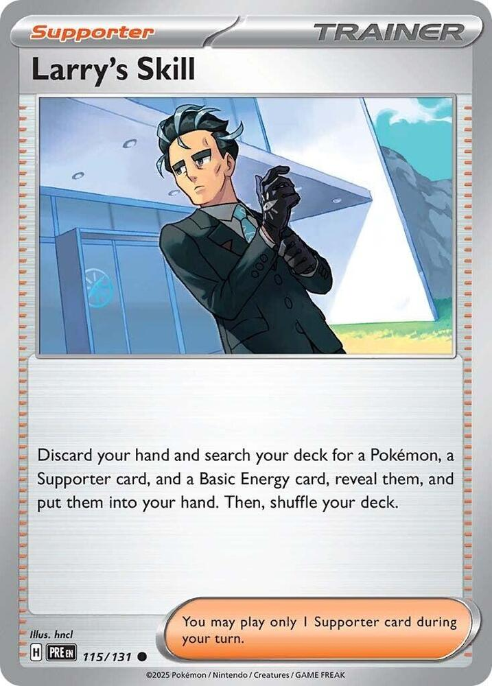
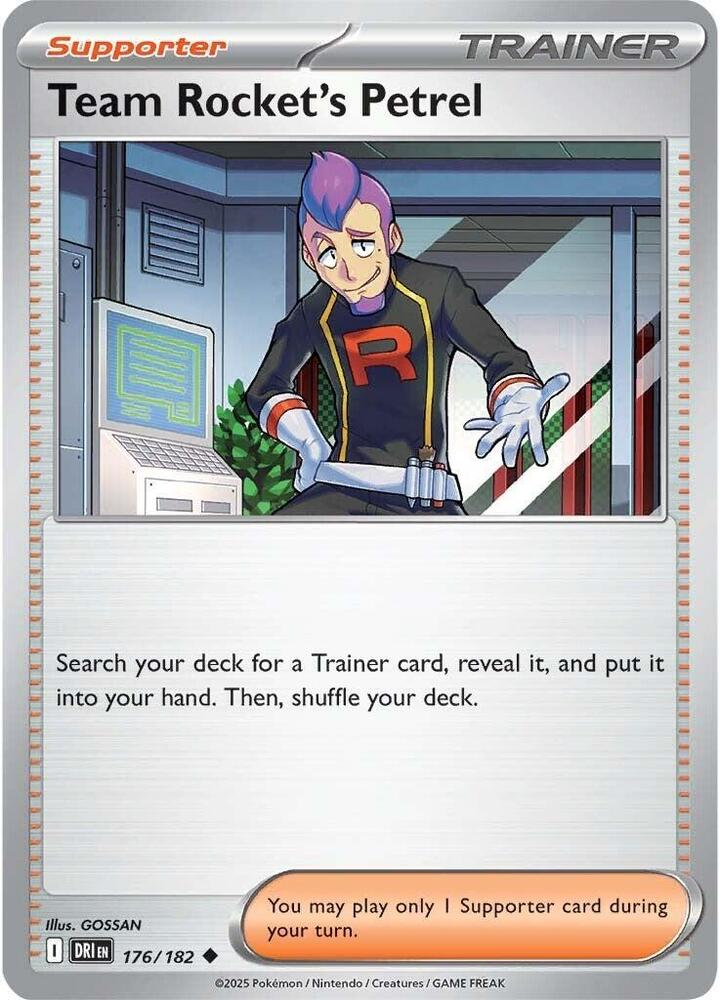
 x4
x4
 x3
x3 x3
x3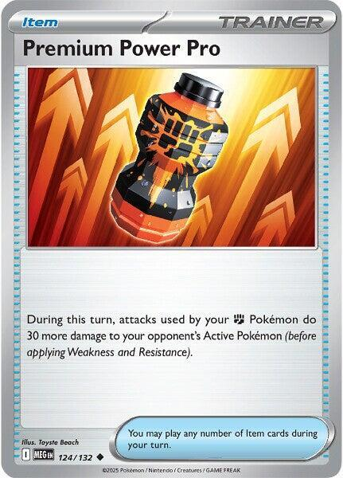
x3


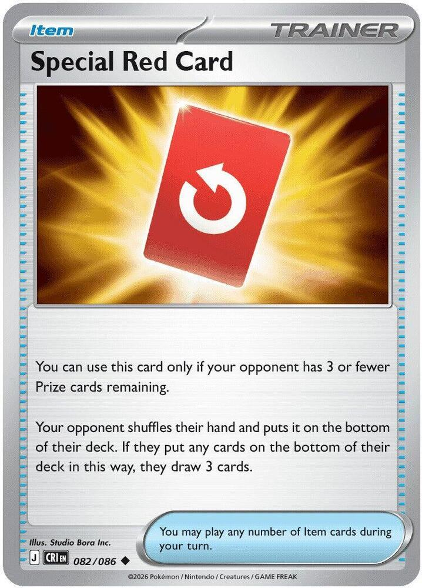
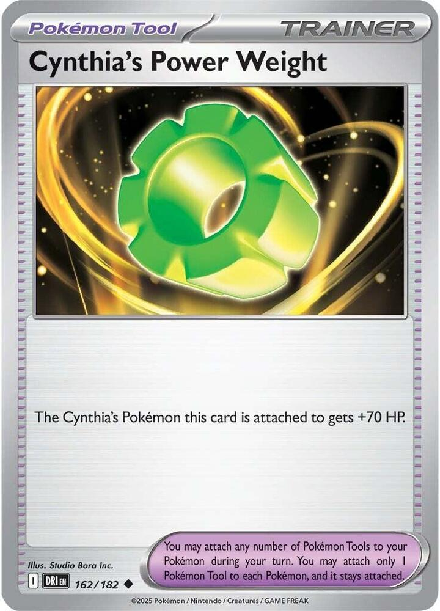
x4
 x7
x7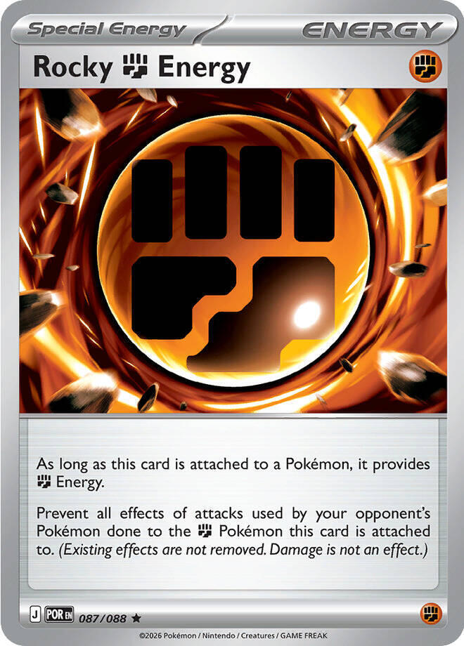
 Champion's Call
Champion's Call 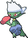

Elliott's league deck · one Energy for 100 and a fresh hand, two for 260, and a 400 HP Stage 2 behind a Battle Cage
← back to all decksGarchomp attacks for one Energy and refills its hand while it does. Corkscrew Dive costs a single  , does 100, and lets you draw until you hold six cards. The attack is the draw engine, so the deck never has to choose between hitting and digging.
, does 100, and lets you draw until you hold six cards. The attack is the draw engine, so the deck never has to choose between hitting and digging.
Everything else on the Bench adds damage or finds the next Garchomp. Each Cynthia's Roserade adds 30 to every attack your Cynthia's Pokémon make, and Premium Power Pro adds 30 more for a turn. Cynthia's Gabite's Champion's Call searches out any Cynthia's Pokémon, every turn, from the Bench.
Draconic Buster is the hammer. It costs , does 260, and sends every Energy on Garchomp to the discard. It is the attack for the Knock Out that Corkscrew can't reach. Nothing in the list accelerates Energy, so a Buster is two attachments on one Garchomp, usually one of them carried up from the Gible.
400 HP is the defense. Garchomp has 330, and Cynthia's Power Weight adds 70. The hardest common hit in Standard is 330, so a Weighted Garchomp survives almost anything the format swings. Four Weights means the Roserades get one too.
| Attack | Energy | Damage | With two Roserades | With two Roserades and a Pro |
|---|---|---|---|---|
| Corkscrew Dive | 1 | 100 | 160 | 190 |
| Draconic Buster | 2 | 260 | 320 | 350 |
The Bench is the soft spot, and this list covers it. Precious Trolley fills the Bench on turn 1, and every Basic in it is 70 HP. Battle Cage stops damage counters landing there, and the Weights put the Roserades out of reach of a 130 snipe. Those are the two cards that make this list different from the field's.
Weakness does the rest. Against a Fighting-weak deck every number doubles, and Corkscrew with two Roserades is 320 for one Energy. That is the whole matchup against Lucky Haunt.
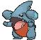
The short version, in order. Game Plans walks through each step.

x3
x4
x4
x4
x3

x3x3

x4x3x3
x3

x4x7
Pokémon (20)
| Qty | Card | Set | Number | Reg |
|---|---|---|---|---|
| 3 | Cynthia's Garchomp ex | Destined Rivals | 104 | I |
| 4 | Cynthia's Gible | Destined Rivals | 102 | I |
| 4 | Cynthia's Gabite | Destined Rivals | 103 | I |
| 4 | Cynthia's Roselia | Destined Rivals | 007 | I |
| 3 | Cynthia's Roserade | Destined Rivals | 008 | I |
| 1 | Cynthia's Spiritomb | Destined Rivals | 129 | I |
| 1 | Meowth ex | Perfect Order | 062 | J |
Trainers (32)
| Qty | Card | Type | Set | Number | Reg |
|---|---|---|---|---|---|
| 3 | Lillie's Determination | Supporter | Mega Evolution | 119 | I |
| 3 | Boss's Orders | Supporter | Mega Evolution | 114 | I |
| 1 | Larry's Skill | Supporter | Prismatic Evolutions | 115 | H |
| 1 | Team Rocket's Petrel | Supporter | Destined Rivals | 176 | I |
| 4 | Buddy-Buddy Poffin | Item | Temporal Forces | 144 | H |
| 1 | Precious Trolley | Item | Surging Sparks | 185 | H |
| 3 | Fighting Gong | Item | Mega Evolution | 116 | I |
| 3 | Poke Pad | Item | Perfect Order | 081 | J |
| 3 | Premium Power Pro | Item | Mega Evolution | 124 | I |
| 1 | Ultra Ball | Item | Mega Evolution | 131 | I |
| 1 | Night Stretcher | Item | Shrouded Fable | 061 | H |
| 1 | Rare Candy | Item | Mega Evolution | 125 | I |
| 1 | Switch | Item | Mega Evolution | 130 | I |
| 1 | Special Red Card | Item | Chaos Rising | 082 | J |
| 4 | Cynthia's Power Weight | Tool | Destined Rivals | 162 | I |
| 1 | Battle Cage | Stadium | Phantasmal Flames | 085 | I |
Energy (8)
| Qty | Card | Set | Number | Reg |
|---|---|---|---|---|
| 7 | Basic Fighting Energy | Mega Evolution Energies | 006 | - |
| 1 | Rocky Fighting Energy | Perfect Order | 087 | J |
20 + 32 + 8 = 60. ✓
His prints differ, and the text doesn't. Elliott plays the Ascended Heroes Gible line (109, 110, and 111), with one Garchomp ex from Destined Rivals 215. His Lillie's, Poffin, Gong, Ultra Ball, Night Stretcher, and Petrel are Ascended Heroes prints, his Battle Cage is Phantasmal Flames 116, his Rare Candy is Scarlet & Violet 191, and his Switch is from HeartGold SoulSilver. The tables pin the prints this site tracks.
Basics: 10 (4 Gible, 4 Roselia, Spiritomb, and Meowth ex), which puts the no-mulligan rate at 74%, a point under the 75-85% band. Gible, Roselia, and Spiritomb are all 70 HP, so every Poffin finds two cards the deck wants. Meowth ex is 170 and has a Rule Box, so only Precious Trolley and Ultra Ball reach it.

 Fighting
Fighting Grass ×2
Grass ×2 legal (Reg I)Corkscrew Dive (100) - You may draw cards until you have 6 cards in your hand.Draconic Buster (260) - Discard all Energy from this Pokémon.
legal (Reg I)Corkscrew Dive (100) - You may draw cards until you have 6 cards in your hand.Draconic Buster (260) - Discard all Energy from this Pokémon.Stage 2 from Gabite. Gives up 2 Prize cards. 330 HP, Retreat 0, Grass Weakness.
Corkscrew Dive is for 100, and you may draw until you have six cards in hand. One Energy, every turn, and the hand refills as it hits.
Draconic Buster is for 260, and then every Energy on Garchomp goes to the discard. That includes the Rocky, so a Buster is also the turn Garchomp stops being immune to attack effects, for good.
Retreat 0 is the quiet stat. Garchomp leaves the Active Spot for free, so Boss's Orders can't strand it, and a damaged one can step back to the Bench and become fuel for Spiritomb.
Three copies. Gabite searches the next one, Ultra Ball finds one, and Night Stretcher brings back a dead one.
 FightingGrass ×2
FightingGrass ×2 1legal (Reg I)Rock Hurl (20) - This attack's damage isn't affected by Resistance.
1legal (Reg I)Rock Hurl (20) - This attack's damage isn't affected by Resistance.70 HP, Fighting, Retreat 1. Four copies, all Poffin-legal, and Fighting Gong finds them too. Rock Hurl does 20 for and rarely matters.
The Rocky goes on the Gible that becomes the first Garchomp. It shields that Pokémon from every attack effect, and the Energy rides both evolutions.
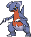
FightingGrass ×21legal (Reg I)Dragonslice (40)The search engine. 100 HP, Retreat 1.
Champion's Call: once during your turn, search your deck for a Cynthia's Pokémon and put it into your hand. It reaches all six Cynthia's Pokémon in the list, Garchomp ex included, and every Gabite on the Bench calls once a turn.
Four copies, the full line under three Garchomp. A Gabite that evolves stops calling, so the second one is the Gabite that stays behind to keep searching. Dragonslice does 40 for .
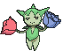
Grass Fire ×21legal (Reg I)Spike Sting (20)
Fire ×21legal (Reg I)Spike Sting (20)70 HP, Grass, Retreat 1, Fire Weakness. Its whole job is becoming Roserade. Four copies, because the deck wants two Roserades standing every game. Spike Sting does 20 for .
 GrassFire ×21legal (Reg I)Leaf Step (80)
GrassFire ×21legal (Reg I)Leaf Step (80)The damage. 130 HP, Grass, Retreat 1, Fire Weakness.
Cheer On to Glory: attacks used by your Cynthia's Pokémon do 30 more damage to your opponent's Active Pokémon, before Weakness. Every copy adds its own 30, so two Roserades on the Bench make Corkscrew 160 and Buster 320.
Three copies. It is the card opponents shoot first, because it is the cheapest body that adds damage. A Power Weight makes it 200, and with four Weights in the list one usually goes here. Leaf Step costs in a deck with no Grass Energy, so it never attacks.
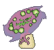

 DarknessGrass ×21legal (Reg I)Raging Curse (10x) - This attack does 10 damage for each damage counter on all of your Benched Cynthia's Pokémon. This attack's damage isn't affected by Weakness.
DarknessGrass ×21legal (Reg I)Raging Curse (10x) - This attack does 10 damage for each damage counter on all of your Benched Cynthia's Pokémon. This attack's damage isn't affected by Weakness.The single-Prize attacker. 70 HP, Darkness, Retreat 1, Grass Weakness.
Raging Curse is , and does 10 damage for each damage counter on all of your Benched Cynthia's Pokémon. Weakness doesn't apply.
It turns the opponent's damage into yours. A Garchomp that took 260 carries 26 counters. Retreat it for free, promote Spiritomb, and Raging Curse is 260, plus 30 for each Roserade. Two Roserades make it 320 for one Energy, from a Basic that gives up one Prize.
It is the answer to the Prize-tax decks. Mega Gengar ex's Shadowy Concealment only discounts Knock Outs by a Pokémon ex, and Spiritomb isn't one. One copy, and Champion's Call finds it. It is Darkness, so Premium Power Pro does nothing for it and Risky Ruins never touches it.
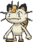
 ColorlessFighting ×21legal (Reg J)Tuck Tail (60) - Put this Pokémon and all attached cards into your hand.
ColorlessFighting ×21legal (Reg J)Tuck Tail (60) - Put this Pokémon and all attached cards into your hand.The Supporter on demand. 170 HP Basic, Colorless, Fighting Weakness, Retreat 1. Gives up 2 Prize cards.
Last-Ditch Catch: when you play it from your hand onto your Bench, search your deck for a Supporter and put it into your hand. It is Boss's Orders on the turn a Knock Out needs one, or Lillie's on a dead hand. It only fires from the hand, so a Meowth that Trolley benches searches nothing.
It is the softest 2 Prizes in the list. It is Colorless and not a Cynthia's Pokémon, so neither the Rocky nor a Power Weight can cover it, and it sits on the Bench where a gust finds it. Bench it on the turn its Supporter wins the turn, and not before.
Tuck Tail is for 60, and puts Meowth and everything attached back in the hand, which resets the Ability. It is rarely worth three Energy.
 legal (Reg I)
legal (Reg I)Three copies. Shuffle your hand into your deck and draw six, or eight while you still hold all six Prizes. Going first, a turn-2 Lillie's still draws eight.
legal (Reg I)Three copies, and three more cards find one: Meowth ex, Petrel, and Larry's Skill. Corkscrew takes a Knock Out every turn it can reach one, and Boss's Orders picks which. Against Lucky Haunt it drags up the Mega Gengar ex, because a Knock Out on the Mega ends Shadowy Concealment for the rest of the game, or the Blissey ex, which is 2 Prizes that Concealment never covers.
legal (Reg H)Discard your hand, then search your deck for a Pokémon, a Supporter, and a Basic Energy. One copy. It is the reset for a hand worth less than three exact cards: a Garchomp ex or the missing Gabite, Boss's Orders for next turn, and a Fighting Energy.
legal (Reg I)Search your deck for a Trainer card. One copy. Supporters are Trainers too, so it finds Boss's Orders for next turn as easily as the Battle Cage, the Rare Candy, the Trolley, or a Power Weight for this one.
 legal (Reg H)
legal (Reg H)Four copies. Two Basics with 70 HP or less, straight to the Bench. Gible, Roselia, and Spiritomb all qualify.

 ACE SPEC Rarelegal (Reg H)
ACE SPEC Rarelegal (Reg H)ACE SPEC. Search your deck for any number of Basic Pokémon and put them onto your Bench. On turn 1 that is a full Bench in one card: two or three Gible, a Roselia, and the Spiritomb. It finds Meowth ex too, but a Meowth benched this way doesn't search.
Against Risky Ruins, every non-Darkness Basic it benches takes 2 counters, so when the Ruins is up, the Cage goes down first.
legal (Reg I)Search your deck for a Basic Fighting Energy or a Basic Fighting Pokémon. Three copies. It finds a Gible or an Energy, which covers a bad opening from either side. Rocky Fighting Energy is Special, so Gong can't find it.
legal (Reg J)Search your deck for a Pokémon without a Rule Box. Three copies. Everything but Garchomp ex and Meowth ex qualifies, Gabite and Roserade included, so a Pad is whatever Stage 1 you're missing.
legal (Reg I)During this turn, your Fighting Pokémon's attacks do 30 more to the Active, before Weakness. Three copies, against the field's one or two, so one boost is in hand most turns even with no Roserade up. Garchomp is Fighting; Spiritomb is Darkness and gets nothing from it.
legal (Reg I)Discard two other cards, then search your deck for any Pokémon. One copy. It is the only Item that finds Garchomp ex or Meowth ex.
 legal (Reg H)
legal (Reg H)A Pokémon or a Basic Energy card from your discard pile to your hand. One copy. A Knocked Out Garchomp comes back, and so does the Spiritomb.
legal (Reg I)One copy. Gible straight to Garchomp, on your second turn at the earliest, and never on a Gible that arrived this turn. With one Candy, the turn-2 Garchomp is a bonus, not a plan.
legal (Reg I)One copy. Everything in the list retreats for one or zero, so Switch is for a stranded or Poisoned Active, not for the retreat bill.
 legal (Reg J)
legal (Reg J)Playable only when your opponent has 3 or fewer Prize cards left. They shuffle their hand, put it on the bottom of their deck, and draw 3. One copy. It is the comeback card, and it lands hardest on a player who holds pieces for future turns.
legal (Reg I)The Cynthia's Pokémon this card is attached to gets +70 HP. Four copies, one more than the field.
The first goes on the Garchomp in front, because 400 clears the format's 330 wall. Against a deck that snipes for exactly 130, which is Chaotic Pain, the next goes on a Roserade, and the Roserade survives the snipe with 70 to spare.
It can go on early. A Tool stays attached through evolution, so a Weight on a Roselia is a Weight on the Roserade it becomes, and the Basic is safe from a 130 snipe on the way up.
 legal (Reg I)
legal (Reg I)No damage counters land on either player's Benched Pokémon from the effects of the opponent's attacks and Abilities. Damage from attacks still lands. One copy.
Nothing in this list places counters on the opponent's Bench, so it only ever stops the opponent. Against Lucky Haunt it switches off Chaotic Pain on the Bench, which is the Gengar deck's whole plan, and it leaves Pain only the Active Spot. Playing it also discards their Stadium, which ends Risky Ruins.
It is a one-shot. Petrel finds it, and nothing in the list returns a Stadium from the discard pile. Once their Stadium replaces it, the Bench is open for the rest of the game, so the timing is in Game Plans.
legalSeven copies, against the field's four. Fighting Gong, Larry's Skill, and Night Stretcher all find it, so a Buster that empties a Garchomp costs Energy the deck can get back.
Energy. Prevent all effects of attacks used by your opponent's Pokémon done to the Pokémon this card is attached to. (Existing effects are not removed. Damage is not an effect.)legal (Reg J)As long as it is attached, it provides Fighting Energy, and it prevents all effects of your opponent's attacks on the Fighting Pokémon holding it. Damage isn't an effect. So it stops Poison, damage counters placed by an attack like Chaotic Pain, and every other attack effect, but not the damage itself.
One copy, where the field runs four. Nothing in the list finds it: Gong, Larry's, and Night Stretcher read Basic Energy, and Petrel reads Trainers. It goes on the first Gible and rides up to Garchomp. Draconic Buster discards it with the rest, and then it is gone for the game.
Boosts are the Roserades on your Bench and the Premium Power Pros you played this turn. Each adds 30, before Weakness.
Corkscrew Dive
| Boosts | Damage | Into Fighting Weakness |
|---|---|---|
| None | 100 | 200 |
| One | 130 | 260 |
| Two | 160 | 320 |
| Three | 190 | 380 |
| Four | 220 | 440 |
Draconic Buster
| Boosts | Damage | Into Fighting Weakness |
|---|---|---|
| None | 260 | 520 |
| One | 290 | 580 |
| Two | 320 | 640 |
| Three | 350 | 700 |
Without Weakness, only Buster kills a Mega. Two boosts put it at 320, enough for Dragapult ex. Three put it at 350, which takes a Mega Excadrill ex at 340 or a Mega Gengar ex at 350. Corkscrew reaches 250 only with five boosts in one turn.
Cynthia's Spiritomb, Raging Curse
| Counters on your Bench | Raging Curse | With two Roserades |
|---|---|---|
| 13, a Weighted Roserade that lived through one Chaotic Pain | 130 | 190 |
| 26, a Garchomp that took a Poisoned Chain-Crazed and retreated | 260 | 320 |
Four cards in the deck are worth two Prizes. Three are the Garchomps, and they wear the Weights. The fourth is Meowth ex, which can't wear one, so it stays in the hand until its Supporter is worth the risk. An opponent who can't get through 400 HP has to take singles instead, and the Bench is made of them. That is why the Bench is the target, and why Battle Cage and the Weights both point there.
Precious Trolley benches every Basic the opening wants in one card: Gibles first, a Roselia, and the Spiritomb. Poffin does two at a time, and Fighting Gong and Poke Pad fill in what it missed. Attach Rocky Fighting Energy to a Gible, because it stays on through both evolutions and makes the finished Garchomp immune to attack effects.
Leave Meowth ex in the deck. Trolley benches it without the search, and it gives up 2 Prizes from the Bench.
Evolve every Gible you can on turn 2. Each Gabite calls once a turn, and the calls go in order: Garchomp ex until one is ready to evolve, then Roserade, then Spiritomb. Keep one Gabite unevolved as long as you can. It is the search engine, and the Garchomp it becomes stops searching.
The line evolves one step a turn, so the first Garchomp arrives on your third turn. The lone Rare Candy makes it turn 2. Gabite calls the Garchomp, and the Candy goes on the other Gible, which has sat a turn.
One Energy, 100 plus 30 for each Roserade and Pro, and a hand of six. Take the Knock Out when it's there, and let the draw find the next Boss's Orders when it isn't. Two Roserades before the first Corkscrew is the target, and three Pros cover the turns they aren't up. When the hand has no Boss's Orders, Meowth ex from the hand fetches one.
Draconic Buster is for the Knock Out Corkscrew can't reach: a Mega, a big ex, anything past 250 without Weakness. It discards everything, so the Garchomp that fires it needs two new Energy to Buster again, or one attachment to Corkscrew. Seven Basic Fighting make the refill easy. The Rocky is the one Energy that doesn't come back.
Against a deck that discounts Knock Outs by Pokémon ex, Spiritomb is the attacker. The damage on your Bench is its ammunition, and a hurt Garchomp that retreats for free is the biggest pile of it.
Battle Cage goes down the turn before the opponent can first put counters on your Bench. Against Lucky Haunt that is the turn before their first Gengar ex can attack, which is their second turn at the earliest. Play it sooner when Risky Ruins is up and the Trolley or Poffin is about to bench Gibles and Roselias under it.
It doesn't come back. Once their Stadium replaces it, the Weights are the only shield the Bench has left, so the Roserades and the unevolved Gabite want one before then.


Versus Xero's Lucky Haunt. This is the matchup the page exists for. Every Pokémon in it is weak to Fighting, Chansey and Blissey ex included, so every number doubles. Its plan is Chaotic Pain: 13 damage counters on any one of your Pokémon, Bench included, to kill the Gible line and the Roserades before they matter.
| Boosts | Corkscrew into Weakness | Knocks Out |
|---|---|---|
| None | 200 | Gastly, Toxel, Haunter, Chansey, and Toxtricity |
| One | 260 | Okidogi ex too, and a Gengar ex carrying Sinister Surge's two counters |
| Two | 320 | Gengar ex and Blissey ex too |
| Three | 380 | Mega Gengar ex too |
Buster is 520 and kills anything. Here is what Xero has, and what this list does about it.
How the Gengar deck plays against this is in Versus Cynthia's Garchomp ex.
Versus Fox's Fire decks. Roselia and Roserade are weak to Fire, and the Garchomp line isn't. Expect the Roserades to go first.

Where Elliott's list sits against the published one, from the 14 paper lists Limitless carries for the current format (Temporal Forces through 30th Celebration), pulled October 8, 2026. The field column is the average count per list.
| Card | Elliott | Field |
|---|---|---|
| Gible, Gabite, Garchomp ex | 4, 4, 3 | 4, 4, 3 |
| Roselia, Roserade | 4, 3 | 3.5, 3.2 |
| Spiritomb | 1 | 0.9 |
| Lillie's Determination | 3 | 3.9 |
| Boss's Orders | 3 | 3.4 |
| Buddy-Buddy Poffin | 4 | 3.8 |
| Poke Pad | 3 | 3.8 |
| Fighting Gong | 3 | 3.1 |
| Cynthia's Power Weight | 4 | 3.1 |
| Premium Power Pro | 3 | 1.6 |
| Basic Fighting Energy | 7 | 4 |
| Rocky Fighting Energy | 1 | 3.9 |
| Battle Cage | 1 | 0.2 |
| Larry's Skill | 1 | 0.1 |
| Precious Trolley, Meowth ex, Ultra Ball | 1 each | none |
| Hilda, Pokégear 3.0, Judge | none | 1.1 to 1.5 |
| Neo Upper Energy | none | 0.6 |
| Shaymin | none | 0.6 |
The core is the field's. The Garchomp line, the Roserades, Spiritomb, the Poffins and Pads, Gong, and Boss's Orders all match within a copy.
Three choices make it his.

Written for the player across from this deck. What you see, what it means, and what to do.
| You see | It means | Do this |
|---|---|---|
| Precious Trolley on turn 1 | a full Bench before you've attacked, and his ACE SPEC is spent | Pain what evolves, not the spare Gibles |
| Battle Cage | Chaotic Pain reaches only his Active, and it's his only Cage | Risky Ruins replaces it for the rest of the game; Petrel finds the Ruins |
| Meowth ex coming down from his hand | he just searched a Supporter, most often Boss's Orders | Boss's Orders it back for 2 Prizes |
| A Power Weight on a Roserade | he knows your snipe | Chaotic Pain the other Roserade, or a Gabite |
| A Power Weight on Garchomp | 400 HP | two Poisoned Chain-Crazed, or one and a Void Gale; a Chain-Crazed and a Pain is 390, ten short |
| The Rocky on a Gible or Gabite | that line is safe from Chaotic Pain, and it's his only Rocky | Pain the other lines |
| A Garchomp with no Rocky | Pain reaches it | Chain-Crazed and a Pain kill it bare |
| A damaged Garchomp retreating for free | Spiritomb is coming | Chaotic Pain the Spiritomb while it's bare and the Cage is down |
| A Garchomp that just used Buster | no Energy left on it | next turn it can only Corkscrew |
| Larry's Skill | his hand is a Pokémon, a Supporter, and an Energy | expect the Supporter next turn, often Boss's Orders |
| Your Prizes down to 3 | Special Red Card is live | play out what's in hand before you take the Prize that gets you there |
What the rest of the field plays in his slots, for the week his list changes.
| Card | In place of | Why |
|---|---|---|
| Neo Upper Energy | Precious Trolley | the field's usual ACE SPEC. On a Stage 2 it provides from one card, so a Garchomp that just evolved can Draconic Buster the same turn, once a game. |
| Rocky Fighting Energy, three more | three Basic Fighting Energy | the field runs four. Each one puts another Garchomp line out of Chaotic Pain's reach, but Gong and Night Stretcher can't find them. |
| Team Rocket's Watchtower | Battle Cage | Colorless Pokémon have no Abilities, which switches off Blissey ex's Happy Switch. It would also switch off his own Meowth ex, and it leaves his Bench open to Pain. |
| Hilda | Larry's Skill | 1.4 a list. Search for an Evolution Pokémon and an Energy card, without discarding the hand. |
| Pokégear 3.0 | Ultra Ball | 1.5 a list. Look at the top seven and take a Supporter. |
| Judge | Special Red Card | 1.1 a list. Both players shuffle in and draw four, and it works at any Prize count. |
| Shaymin | Meowth ex | 0.6 a list. Flower Curtain stops attack damage to Benched Pokémon with no Rule Box. It doesn't stop counters, so it does nothing against Chaotic Pain. |
| Unfair Stamp | Precious Trolley | 0.2 a list. Playable the turn after one of your Pokémon is Knocked Out. Both players shuffle their hands in, you draw 5, and they draw 2. |